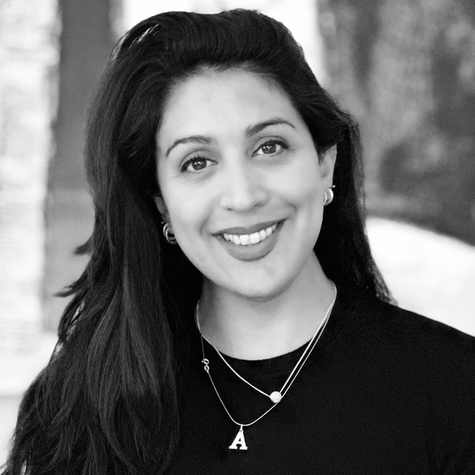

Sobre míAbout me
Soy médica especialista en psiquiatría de adultos. Acompaño a personas que atraviesan momentos difíciles con una mirada atenta, comprometida y respetuosa de cada proceso.
Trabajo con herramientas clínicas actualizadas y basadas en evidencia, pero también con la convicción de que lo más importante es entender qué necesita cada persona en su contexto.
Estudié medicina en la Universidad de Buenos Aires y me formé como psiquiatra en el Hospital de Emergencias Psiquiátricas Torcuato de Alvear.
I am a medical doctor specialized in adult psychiatry, offering attentive, committed care to people going through difficult moments while respecting each individual process.
I work with up-to-date, evidence-based clinical tools, while holding the conviction that the most important thing is to understand what each person needs in their own context.
I studied medicine at the University of Buenos Aires and trained as a psychiatrist at the Torcuato de Alvear Psychiatric Emergency Hospital.
En qué puedo ayudarteHow I can help
Estas son algunas de las áreas en las que puedo acompañarte:These are some of the areas in which I can support you:
Estado de ánimoMood — depresión, trastorno bipolar, distimia, duelo complicadodepression, bipolar disorder, dysthymia, complicated grief
AnsiedadAnxiety — ansiedad generalizada, pánico, ansiedad social, fobiasgeneralized anxiety, panic, social anxiety, phobias
TraumaTrauma — TEPT, estrés agudo, trastorno de adaptaciónPTSD, acute stress, adjustment disorder
TOC y relacionadosOCD and related — TOC, tricotilomaníaOCD, trichotillomania
NeurodesarrolloNeurodevelopment — TDAHADHD
Trastornos de personalidadPersonality disorders
InsomnioInsomnia